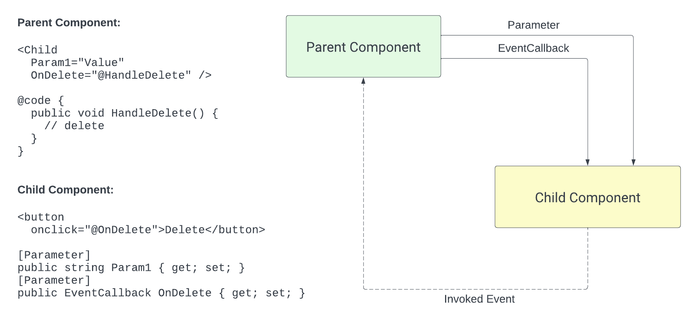

5.4. Kosár és hozzászólások¶
.NET - JS InterOp¶
Bizonyos esetekben szükségünk van, hogy .NET kódból tudjunk JavaScript kódot hívni, vagy éppen fordítva. Erre egy jó példa, a Session- és LocalStorage. A Storage-ok JavaScriptből érhető el, viszont mi C# kódból szeretnénk ezt hívni. Tehát kell valami megoldás, hogy .NET kódból tudjunk JS kódot hívni.
A IJSRuntime a kulcs elem. Itt az alábbi két metódust találjuk
InvokeAsync<TValue>: Olyan JS függvény meghívására szolgál, melyeknek van visszatérési értéke. A generikus paraméter arra szolgál, hogy a visszaadott értéket JSON szerializáción és deszerializáción keresztül egy C# típusra képezze le.InvokeAsync: Olyan JS függvények hívására szolgál, ami nem ad vissza adatot (void)
{kind=link}
JavaScript InterOp
A Web Storage API olyan mechanizmusokat biztosít, amelyek segítségével a böngészők kulcs–érték párokat tudnak tárolni kliens oldalon. A Web Storage két mechanizmusa a következő:
- A sessionStorage böngészőfülek és URL szerint van elkülönítve. A böngészőfül bezárásakor az adott fülhöz tartozó összes sessionStorage-adat törlődik.
- A localStorage kizárólag URL szerint van elkülönítve. Minden azonos URL-ű oldal ugyanahhoz a localStorage területhez fér hozzá, és az adatok akkor is megmaradnak, ha a böngészőt bezárják és újra megnyitják.
Az alábbi kód mutatja, hogy JavaScriptből hogyan tudjuk ezt használni. Amit majd .NET-ből szeretnénk hívni.
// Save data to sessionStorage
sessionStorage.setItem("key", "value");
// Get saved data from sessionStorage
let data = sessionStorage.getItem("key");
// Remove saved data from sessionStorage
sessionStorage.removeItem("key");
// Remove all saved data from sessionStorage
sessionStorage.clear();
-
Először vegyünk fel egy
SessionStorageAccessor.jsfájlt aBookShop.Web/wwwroot/jsmappába. Ez a fájl JS függvényeket exportál ki, amiket majd meg fogunk hívni .NET-ből. Ügyeljünk rá, hogy az érték, amit átadunk a JS kódnak egyObject, azonban a SessionStorage-be csakstring-et lehet eltárolni, ezért aJSON.parseésJSON.stringifyfüggvényeket kell használnunk.SessionStorageAccessor.jsexport function get(key) { var value = window.sessionStorage.getItem(key); return JSON.parse(value); } export function set(key, value) { window.sessionStorage.setItem(key, JSON.stringify(value)); } export function clear() { window.sessionStorage.clear(); } export function remove(key) { window.sessionStorage.removeItem(key); } -
Ez követően készítsük el a
ISessionStorageAccessorC#-os interfészt. Ezeket fogjuk tudni majd hívni. (Get / Set / Remove / Clear).IStorageAccessor.csnamespace BookShop.Web.Client.StorageAccessor; public interface ISessionStorageAccessor { public Task<T?> GetValueAsync<T>(string key); public Task SetValueAsync<T>(string key, T value); public Task Clear(); public Task RemoveAsync(string key); } -
Így már el is készíthetjük a lényegi kódot, ami szükség esetén betölti a JS fájlt, majd áthív a .NET-ből a JS kódba, ez lesz a
SessionStorageAccessor.cs- A konstruktorban injektáljuk az
IJSRuntime-ot. - Készítünk egy
WaitForReferencemetódust, ami ha még nincs beimportálva a szüksége JS kód akkor megteszi ezt és eltárolja a JS objektumra a referenciát, amin keresztül majd tudjuk hívni a kódunkat. Közvetlenül aJSRuntime-on keresztül azért nem tudjuk hívni a kódunkat, mert az nem beépített JS kódot hív, ezért kell a referencia. - Minden függvény előtt meg kell győződni, hogy be van importálva a JS kód és csak utána lehet a referencián keresztül az
InvokeAsyncvagyInvokeVoidAsyncsegítségével meghívni a JS kódot. - Fontos, hogy a JS objektum referenciát a
DisposeAsync-ban felszabadítsuk.
SessionStorageAccessor.csusing Microsoft.JSInterop; namespace BookShop.Web.Client.StorageAccessor; public class SessionStorageAccessor(IJSRuntime jsRuntime) : ISessionStorageAccessor, IAsyncDisposable { private Lazy<IJSObjectReference> accessorJsRef = new(); public async Task<T?> GetValueAsync<T>(string key) { await WaitForReference(); return await accessorJsRef.Value.InvokeAsync<T>("get", key); } public async Task SetValueAsync<T>(string key, T value) { await WaitForReference(); await accessorJsRef.Value.InvokeVoidAsync("set", key, value); } public async Task Clear() { await WaitForReference(); await accessorJsRef.Value.InvokeVoidAsync("clear"); } public async Task RemoveAsync(string key) { await WaitForReference(); await accessorJsRef.Value.InvokeVoidAsync("remove", key); } private async Task WaitForReference() { if (accessorJsRef.IsValueCreated is false) accessorJsRef = new(await jsRuntime.InvokeAsync<IJSObjectReference>("import", "/js/SessionStorageAccessor.js")); } public async ValueTask DisposeAsync() { if (accessorJsRef.IsValueCreated) await accessorJsRef.Value.DisposeAsync(); } } - A konstruktorban injektáljuk az
-
Regisztráljuk be a
SessionStorageAccessor-t a kliens projektProgram.csben.Program.csusing BookShop.Api; using BookShop.Web.Client.StorageAccessor; using Microsoft.AspNetCore.Components.WebAssembly.Hosting; var builder = WebAssemblyHostBuilder.CreateDefault(args); builder.Services.AddApiClientServices(new Uri(builder.HostEnvironment.BaseAddress)); builder.Services.AddSingleton<ISessionStorageAccessor, SessionStorageAccessor>(); await builder.Build().RunAsync();Singleton vs Scoped szolgáltatások
Mivel a WebAssembly a felhasználó böngészőjében fut, és minden böngészőfül teljesen különálló folyamatként működik, a szolgáltatások életciklusa másképpen működik, mint ahogy azt szerver oldalon megszoktuk.
Kliens oldalon a Singleton-ként és Scoped-ként regisztrált szolgáltatások életciklusa azonos, mindkettő a teljes alkalmazás élete során él, azaz browser session-ben (tabfülentként) csak egy példány van belőle.
A Transient-ként regisztrált szolgáltatások minden alkalommal, amikor elkérjük új példányt kapunk. -
Ezzel el is készült a SessionStorage kezeléshez szükséges kód, amit a következő lépésben a kosárkezelésnél fogunk használni.
Kosárkezelés¶
A könyv részletes oldalon már megtalálható a Kosárba gomb viszont ez még nem csinál semmit. Készítsük el a kosaram oldalt, illetve valósítsuk meg a kosárba tétel funkciót is. A kosárban lévő elemeket tárolhatnánk adatbázisban, ami egy jó megoldás, azonban most mégsem ezt választjuk, hogy ki tudjuk próbálni a JS InterOp-ot.
A Blazored SessionStorage NuGet package adott egy megoldást, hogy ne nekünk kelljen körbekódolni a SessionStorage-et, viszont már nem tartják karban, ettől függetlenül használható még egy darabig.
-
A
Layout/NavMenu.razoroldalon a menübe vegyük fel egy Kosaram linket.NavMenu.razor<div class="top-row ps-3 navbar navbar-dark"> <div class="container-fluid"> <a class="navbar-brand" href="">BookShop.Web</a> </div> </div> <input type="checkbox" title="Navigation menu" class="navbar-toggler" /> <div class="nav-scrollable" onclick="document.querySelector('.navbar-toggler').click()"> <nav class="nav flex-column"> <div class="nav-item px-3"> <NavLink class="nav-link" href="" Match="NavLinkMatch.All"> <span class="bi bi-house-door-fill-nav-menu" aria-hidden="true"></span> Home </NavLink> </div> <div class="nav-item px-3"> <NavLink class="nav-link" href="cart" Match="NavLinkMatch.All"> <span class="bi bi-cart-fill-nav-menu" aria-hidden="true"></span> Kosaram </NavLink> </div> <div class="nav-item px-3"> <NavLink class="nav-link" href="counter"> <span class="bi bi-house-door-fill-nav-menu" aria-hidden="true"></span> Counter </NavLink> </div> <div class="nav-item px-3"> <NavLink class="nav-link" href="weather"> <span class="bi bi-list-nested-nav-menu" aria-hidden="true"></span> Weather </NavLink> </div> </nav> </div> -
A navigációs linkek előtti ikonok a NavMenu.razor.css fájlban kerültek megadásara. Ez a fájl olyan CSS-t tartalmaz ami csak a NavMenu komponensre vonatkozik. Maguk az ikonkészlet amit használ a Bootstrap icons ebből mi a cart-fill-t szeretnénk használni. Az ehhez tartozó SVG az alábbi kódrészlet.
bi-cart-fill<svg xmlns="http://www.w3.org/2000/svg" width="16" height="16" fill="currentColor" class="bi bi-cart-fill" viewBox="0 0 16 16"> <path d="M0 1.5A.5.5 0 0 1 .5 1H2a.5.5 0 0 1 .485.379L2.89 3H14.5a.5.5 0 0 1 .491.592l-1.5 8A.5.5 0 0 1 13 12H4a.5.5 0 0 1-.491-.408L2.01 3.607 1.61 2H.5a.5.5 0 0 1-.5-.5M5 12a2 2 0 1 0 0 4 2 2 0 0 0 0-4m7 0a2 2 0 1 0 0 4 2 2 0 0 0 0-4m-7 1a1 1 0 1 1 0 2 1 1 0 0 1 0-2m7 0a1 1 0 1 1 0 2 1 1 0 0 1 0-2"/> </svg> Ha megnyitjuk a `NavMenu.razor.css` fájlt láthatjuk, hogy az egyes ikonok úgy kerüte megadása, hogy háttérnek beállítja az svg fájlt. Tehát a kosár ikonhoz a fenti SVG forrást kell bemásolni, ügyelve az escape-elésre és hogy nem idézőjelet, hanem aposztrófot kell használni. ``` css title="NavMenu.razor.css" .bi-cart-fill-nav-menu { background-image: url("data:image/svg+xml,%3Csvg xmlns='http://www.w3.org/2000/svg' width='16' height='16' fill='white' class='bi bi-cart-fill' viewBox='0 0 16 16'%3E%3Cpath d='M0 1.5A.5.5 0 0 1 .5 1H2a.5.5 0 0 1 .485.379L2.89 3H14.5a.5.5 0 0 1 .491.592l-1.5 8A.5.5 0 0 1 13 12H4a.5.5 0 0 1-.491-.408L2.01 3.607 1.61 2H.5a.5.5 0 0 1-.5-.5M5 12a2 2 0 1 0 0 4 2 2 0 0 0 0-4m7 0a2 2 0 1 0 0 4 2 2 0 0 0 0-4m-7 1a1 1 0 1 1 0 2 1 1 0 0 1 0-2m7 0a1 1 0 1 1 0 2 1 1 0 0 1 0-2'/%3E%3C/svg%3E"); }Ez macerás, ettől sokkal egyszerűbb lenne, ha behivatkoznánk a CSS-t és letöltenénk a font fájlt hozzá. Ezen megoldások a Bootstrap icons odalának legalján találhatók meg.
-
Az könyv részletes oldalán Book.razor már van egy kosárba gombunk, ami meg is hívja az
AddToCarteseménykezelőt, amit még nem készítettünk el. Most ezt fogjuk megtenni. A Kosárba gombra kattintva aSessionStorage-ban fogjuk gyűjteni a termékeket. Egészen pontosan a termék azonosítóját, árát és darabszámát. Készítsük is el hozzá a szükséges modell osztályt aBookShop.Web.Client/ModelskönyvtárbanCartItem.csnévvel. Azért elég a kliens oldali kódban, mert ez a szerverre nem fog eljutni.CartItem.csnamespace BookShop.Web.Client.Models; public class CartItem { public int BookId { get; set; } public int Price { get; set; } public int Count { get; set; } } -
Ezt követően a feladatunk annyi lesz, hogyha rákattintanak a Kosárba gombra, akkor a
SessionStorage-ben tároljuk el egy újCartItem-et a Book oldalAddToCart()metódusában.- Elöször kérdezzük le a SessionStorage-ben lévő
CartItemlistát. - Ha a listában már szerepel a könyv, akkor a csak a darabszámot kell növelni, ha nem szerepel benne, akkor egy új elemet kell hozzáadni a listához.
- Majd mentsük el a SessionStora-be az új listát.
Book.cshtml.cspublic async Task AddToCart() { var cart = await sessionStorage.GetValueAsync<List<CartItem>>("Cart") ?? []; var cartItem = cart.SingleOrDefault(c => c.BookId == BookData.Id); if (cartItem != null) { cartItem.Count++; } else { cartItem = new CartItem { BookId = BookData.Id, Count = 1, Price = BookData.DiscountedPrice ?? BookData.Price }; cart.Add(cartItem); } await sessionStorage.SetValueAsync("cart", cart); } - Elöször kérdezzük le a SessionStorage-ben lévő
-
Ahhoz, hogy lássuk be is került a kosárba az elem módosítsuk a Layout oldalt úgy, hogy a Kosaram mögött írja ki a benne lévő elemek számát - ha van benne elem - egy badge-ben.
- A
position-relativeCSS osztályt tegyük rá aNavLink-re, hogy ahhoz képest legyen abszolút pozícionálva a badge. - Itt nincs code behindunk, így készítsünk egy
@codeblokkot a fájl végén és ott kérdezzük le kosárban lévő elemek számát.
NavMenu.razor<div class="nav-item px-3"> <NavLink class="nav-link position-relative" href="cart" Match="NavLinkMatch.All"> <span class="bi bi-cart-fill-nav-menu" aria-hidden="true"></span> Kosaram @if (cart.Any()) { <span class="position-absolute translate-middle badge rounded-pill bg-danger"> @(cart.Sum(x => x.Count)) <span class="visually-hidden">elem a kosárban</span> </span> } </NavLink> </div> @code { private List<CartItem> cart = []; protected override async Task OnInitializedAsync() { cart = await sessionStorageAccessor.GetValueAsync<List<CartItem>>("Cart") ?? []; } } - A
-
Ahogy a fenti kódban látjuk most a SessionStorage kulcsot több helyen beledrótoztuk az kódba, így nehéz lehet azt megváltoztatni. A szép megoldás ilyenkor, hogy felveszünk egy pl.:
BookShopConstantsosztályt és ott gyűjtjük össze az összes magic konstanst és azt használjuk. Vezessük is át a kódon, hogy ezt használjuk a beégetettCarthelyett.namespace BookShop.Web.RazorPage.Models; public class BookShopConstants { public const string CartSessionKey = "Cart"; } -
Ha kipróbáljuk a kosárba tétel funkciót, azt tapasztaljuk, hogy bár bekerül a kosárba a könyv, a bage a kosaram mellett nem frissül.
Kosár változás esemény¶
Azért nem frissül a kosaram mellett a darabszám amikor a könyv részletes oldalon megnyomjuk a kosárba tétel gombot, mert nem értesül a navigációs rész a módosítáról. Ezért kellene készíteni egy CartService-t a kliens oldalon, ami megvalósítja a kosár műveleteket, a SessionStorageAccessor felhasználásával és minden módosításkor elsüt egy eseményt, amire a NavMenu fel tud iratkozni, hogy meghívja a StateHasChanged-et.
-
Először hozzuk létre a szolgáltaás intefészét
ICartServicea kliens projektServicesmappájában az alábbi kóddal.- Definiáljuk az
OnCartChangeeseményt. Erre lehet majd feliratkozni és ezt fogjuk elsütni, ha változik a kosár tartalma. - Definiáljunk egy
Cartproperty-t amiben a kosár aktuális tartalma található.
ICartService.csusing BookShop.Web.Client.Models; namespace BookShop.Web.Client.Services; public interface ICartService { public event EventHandler OnCartChange; public Task<List<CartItem>> GetCartItemsAsync(); public Task AddAsync(CartItem cartItem); public Task RemoveAsync(int bookId); public Task IncrementAsync(int bookId); public Task DecrementAsync(int bookId); } - Definiáljuk az
-
Majd készítsük el az implementációját is.
- A konstruktorban kérjünk el egy
ISessionStorageAccessorpéldány, ezen keresztül fogjuk a session storage-et kezelni. - Az
AddAsync-ban először töltsük fel a session storage-ből a kosár tartalmát, ha még üres lenne. - Ha már szerepel a kosárban a hozzáadni kívánt könyv, akkor csak növeljük meg a darabszámot, egyébként adjuk hozzá a listához.
- Mentsük le az új
Cartlistát a session storage-ba - Süssük el az
OnCartChangeeventet. - Hasonlóan készítsük el a többi metódust is. Fontos, hogy mindig ellenőrizzük, hogy be kell-e tölteni az aktuális listát.
CartService.csusing BookShop.Web.Client.Models; using BookShop.Web.Client.StorageAccessor; namespace BookShop.Web.Client.Services; public class CartService(ISessionStorageAccessor sessionStorage) : ICartService { public event EventHandler? OnCartChange; private List<CartItem>? cart; public async Task<List<CartItem>> GetCartItemsAsync() { cart ??= await sessionStorage.GetValueAsync<List<CartItem>>(BookShopConstants.CartSessionKey) ?? []; return cart; } public async Task AddAsync(CartItem cartItem) { cart ??= await sessionStorage.GetValueAsync<List<CartItem>>(BookShopConstants.CartSessionKey) ?? []; var itemInCart = cart.SingleOrDefault(c => c.BookId == cartItem.BookId); if (itemInCart != null) itemInCart.Count++; else cart.Add(cartItem); await sessionStorage.SetValueAsync(BookShopConstants.CartSessionKey, cart); OnCartChange?.Invoke(this, EventArgs.Empty); } public async Task RemoveAsync(int bookId) { cart ??= await sessionStorage.GetValueAsync<List<CartItem>>(BookShopConstants.CartSessionKey) ?? []; var itemInCart = cart.SingleOrDefault(c => c.BookId == bookId); if (itemInCart is null) return; if (itemInCart.Count == 1) cart.Remove(itemInCart); else itemInCart.Count--; await sessionStorage.SetValueAsync(BookShopConstants.CartSessionKey, cart); OnCartChange?.Invoke(this, EventArgs.Empty); } public async Task IncrementAsync(int bookId) { cart ??= await sessionStorage.GetValueAsync<List<CartItem>>(BookShopConstants.CartSessionKey) ?? []; var itemInCart = cart.SingleOrDefault(c => c.BookId == bookId); if (itemInCart is null) return; itemInCart.Count++; await sessionStorage.SetValueAsync(BookShopConstants.CartSessionKey, cart); OnCartChange?.Invoke(this, EventArgs.Empty); } public async Task DecrementAsync(int bookId) { cart ??= await sessionStorage.GetValueAsync<List<CartItem>>(BookShopConstants.CartSessionKey) ?? []; var itemInCart = cart.SingleOrDefault(c => c.BookId == bookId); if (itemInCart is null) return; if (itemInCart.Count == 1) cart.Remove(itemInCart); else itemInCart.Count--; await sessionStorage.SetValueAsync(BookShopConstants.CartSessionKey, cart); OnCartChange?.Invoke(this, EventArgs.Empty); } } - A konstruktorban kérjünk el egy
-
Módosítsuk a
Book.razor.cs-ben azAddToCartmetódust, hogy azCartService-en keresztül módosítsa a kosarat és a konstruktorban is azICartServicepéldányt várjuk, ne közvetlenül aISessionStorageAccessor-t. Az alábbi kód csak a változott részeket tartalmazza.Book.razor.cspublic partial class Book(IBooksClient booksClient, ICartService cartService/*, ISessionStorageAccessor sessionStorage*/) { public async Task AddToCart() { await cartService.AddAsync(new CartItem { BookId = BookData.Id, Count = 1, Price = BookData.DiscountedPrice ?? BookData.Price }); } } -
És végül módosítuk a
NavMenu.razorfájlt is,NavMenu.razor@using BookShop.Web.Client.Services @inject ICartService cartService @* ... *@ @code { private List<CartItem> cart = []; protected override async Task OnInitializedAsync() { // Get initial cart items. cart = await cartService.GetCartItemsAsync(); cartService.OnCartChange += async (sender, args) => { // Update list and UI when cart changes. cart = await cartService.GetCartItemsAsync(); await InvokeAsync(StateHasChanged); }; } } -
Így kirpóbálva az alkalmazást már működni fog a kosárban lévő elemek számának frissítése.
// TODO: Ez hova kerüljön?

{kind=link}
Kosaram oldal¶
A következő lépés, hogy meg is tudjuk mutatni, hogy pontosan milyen könyvek vannak a kosárban.
-
Mivel az oldalon szeretnénk ikonokat is használni (+ és - gombok) ezért először adjuk hozzá a projekthez a Bootstrap icons-t
- Töltsük le a fenti oldal legalján lévő "Download latest ZIP" gombbal az ikonokat.
-
A letöltött fájlt tartalmát másoljuk be a
BookShop.Webprojektwwwroot/lib/bootstrap-iconkönyvtárában. Asvgfájlokat nem szükséges odamásolni, mert azt nem fogjuk használni.Bootstrap ikonok a projektben
Bootstrap ikonok a projektben
-
Ezt követően a
App.razorfájlban linkeljük be a CSS fájlt.App.razor<!DOCTYPE html> <html lang="en"> <head> <meta charset="utf-8" /> <meta name="viewport" content="width=device-width, initial-scale=1.0" /> <base href="/" /> <ResourcePreloader /> <link rel="stylesheet" href="@Assets["lib/bootstrap/dist/css/bootstrap.min.css"]" /> <link rel="stylesheet" href="@Assets["lib/bootstrap-icons/bootstrap-icons.min.css"]" /> <link rel="stylesheet" href="@Assets["app.css"]" /> <link rel="stylesheet" href="@Assets["BookShop.Web.styles.css"]" /> <ImportMap /> <link rel="icon" type="image/png" href="favicon.png" /> <HeadOutlet @rendermode="InteractiveWebAssembly" /> </head> <body> <Routes @rendermode="new InteractiveWebAssemblyRenderMode(prerender: false)" /> <script src="@Assets["_framework/blazor.web.js"]"></script> </body> </html>
-
Ezt követően a
BookShop.Web.Clientprojektben hozzuk létre aPagesalattCartoldalt. -
Az oldal kódja meglehetősen egyszerű, hiszen az
OnInitializedAsync-ben ki kell olvasni a SessionStorage-ből az eltárolt kosár tartalmát, amihez már tudjuk használni aICartService-t, majd le kell kérdezni azIBooksClient-en keresztül a könyvek adatait a szervertől, amihez aGetBookHeadersAsync-ot tudjuk használni.Cart.cshtml.csusing BookShop.Api; using BookShop.Transfer.Dtos; using BookShop.Web.Client.Models; using BookShop.Web.Client.Services; namespace BookShop.Web.Client.Pages; public partial class Cart(ICartService cartService, IBooksClient booksClient) { public List<CartItem> CartItems { get; set; } = []; public IList<BookHeader> Books { get; set; } = []; protected override async Task OnInitializedAsync() { CartItems = await cartService.GetCartItemsAsync(); var bookIds = CartItems.Select(ci => ci.BookId).ToList(); Books = await booksClient.GetBookHeadersAsync(bookIds) ?? []; await base.OnInitializedAsync(); } } -
Ezt követően a megjelenítést is készítsük el. A megjelenítés a Bootstrap card-ot használjuk, csak itt a kép a bal oldalon lesz nem felül.
- Iteráljunk végig a kosár elemein amit a
CartItems-ban érünk el. - Válasszuk ki az adott kosárelemhez tartozó könyvet a
Bookstulajdonságból. - A card-footer-be tegyük az egységárat és a mennyiséget egy + és - gombbal. Ami a
CartService-ben már elkészítettIncrementAsyncésDecrementAsyncmetódusait kell, hogy hívja. - Vegyük fel egy
Eltávolításgombot is, ami pedig aRemoveAsync-ot kell meghívja. - Végül írjuk ki az teljes árat. Itt arra kell figyelni, hogy egy könyvből többet is rendelhetünk.
Cart.razor@page "/Cart" <PageTitle>Kosár</PageTitle> <h2>Kosaram</h2> @foreach (var item in CartItems) { // Query the book header (the Books property is populated in the PageModel, from the database) var book = Books.Single(b => b.Id == item.BookId); <div class="card flex-row mb-2"> <img src="@("/images/covers/" + item.BookId + ".jpg")" class="img-fluid rounded-start" alt="@book.Title" title="@book.Title" /> <div class="card-body"> <h5 class="card-title"> <a asp-page="Book" asp-route-id="@book.Id">@book.Title</a> @if (!String.IsNullOrWhiteSpace(book.Subtitle)) { <br /> <small>@book.Subtitle</small> } </h5> <p class="card-text"> <small> @foreach (var author in book.Authors) { <a asp-page="Book" asp-route-authorId="@author.Id">@author.Name</a> } </small> </p> </div> <div class="card-footer border-top-0 border-start"> <div class="mb-3">Egységár: <b>@item.Price.ToString("N0") Ft</b></div> <div class="d-flex align-items-center justify-content-center mb-3"> <button class="btn btn-outline-info btn-sm me-2" @onclick="@(async () => await cartService.DecrementAsync(book.Id))"><i class="bi bi-dash"></i></button> <b>@item.Count db</b> <button class="btn btn-outline-info btn-sm ms-2" @onclick="@(async () => await cartService.IncrementAsync(book.Id))"><i class="bi bi-plus"></i></button> </div> <div class="d-flex justify-content-center"> <button class="btn btn-outline-danger btn-sm ms-2" @onclick="@(async () => await cartService.RemoveAsync(book.Id))"><i class="bi bi-trash"></i> Eltávolítás</button> </div> </div> </div> } <div class="d-flex justify-content-end me-3"> Összesen: <b>@CartItems.Sum(book => book.Price * book.Count).ToString("N0") Ft</b> </div> - Iteráljunk végig a kosár elemein amit a
-
Ha elindítjuk az alkalmazást és beteszünk pár könyvet a kosrába és újratöltjük az oldalt, akkor egy kivételt kapunk, ami azt jelzi, hogy a kosárban lévő könyvhöz tartozó
BookHeadernem található. Ha megnézzük a kódot, akkor azt találjuk, hogy azOnInitializedAsync-ban először aszinkron módon lekérdezzük a kosár tartalmát, majd ezt követően töltjük be aBookslistát. Azonban a megjelenítésnél amikor a korás elemeken végigiterálunk, még nincs betöltse aBookslista, mert azOnInitializedAsyncelsőawait-nél felfüggeszti a végrehajtást és renderel egyet, amikor még üres aBookslista. Tehát nem biztosítottuk azt, hogy az elsőawait-nél is renderelhető állapotban legyen a kód. -
A javítás csak annyi, hogy amikor a kosár elemeket végigiterálunk és keressük a hozzá tartozó könyv-et, akkor ha nem találunk, akkor nem próbáljuk meg kirenderelni.
Cart.razor@foreach (var item in CartItems) { // Query the book header (the Books property is populated in the PageModel, from the database) var book = Books.SingleOrDefault(b => b.Id == item.BookId); if (book is null) continue; <div class="card flex-row mb-2"> -
Próbáljuk is ki az oldalt. Ehhez először tegyünk a kosárba egy pár könyvet, majd próbáljuk ki a Kosár oldalon a gombokat.
Az elkészített kosár oldal
Kész kosár oldal
{kind=link}
{kind=link}
Hozzászólások¶
A felhasználók a könyvekhez hozzászólásokat (és ajánlókat is írhatnak). Minden a két esetben az ICommentClient-t használjuk, mert a két típusú komment között csak a CommentType értéke eltérő.
Hozzászólások listázása¶
-
A könyv részletes oldalon injektáljuk az
ICommentsClient-et és azOnInitializedAsync-ban kérdezzük le a könyvhöz tartozó kommenteket aGetCommentsAsyncsegítségévelBook.cshtml.cspublic partial class Book(IBooksClient booksClient, ICommentsClient commentsClient, ICartService cartService) { [Parameter] public int Id { get; set; } public BookData BookData { get; set; } = new(); public IList<CommentData> Comments { get; set; } = []; protected override async Task OnInitializedAsync() { var tasks = new Task[] { Task.Run(async () => BookData = await booksClient.GetBookAsync(Id)), Task.Run(async () => Comments = await commentsClient.GetCommentsAsync(Id, Transfer.Enums.CommentType.Comment, 5)), }; await Task.WhenAll(tasks); // BookData = await booksClient.GetBookAsync(Id); // Comments = await commentsClient.GetCommentsAsync(Id, Transfer.Enums.CommentType.Comment, 5); await base.OnInitializedAsync(); } // ... }Az
OnInitializedAsync-ban nem egymás után hívtuk meg a két aszinkron betöltő metódusunkat, hanem egyTasktömbbe összegyűjtüttök őket és egyszerre hívjuk meg és várjuk be mindet. Így a két hálózati kérés parhuzamosan fut, amiről a böngésző DevToolbar hálózat fülén meg is tudunk győződni. -
Ezt követően jelenítsük is meg a kommenteket, ehhez végig kell iterálni a
Comments-en és az egyes elemekhez bal oldalra kitenni egybi-person-squarebootstrap ikont, alá pedig a hozzászólás dátumát és idejét, jobb oldalra pedig magát a hozzászólás szövegét, ami egy sima szöveg HTML tartalom nélkül.Book.cshtml<div class="row"> <div class="col-lg-6"> <h3>Kommentek</h3> @foreach (var comment in Comments) { <div class="comment d-flex p-3"> <div class="d-flex flex-column align-items-center justify-content-center flex-shrink-0 me-3"> <i class="bi bi-person-square fs-1"></i> <div class="text-muted">@(comment.CreatedDate.DateTime.ToShortDateString())</div> <div class="text-muted">@(comment.CreatedDate.DateTime.ToShortTimeString())</div> </div> <div class="w-100"> @comment.Text </div> </div> } </div> <div class="col-lg-6"> <h3>Ajánlók</h3> </div> </div> -
Ha mindent jól csináltunk az 1-es ID-jú könyvnél megjelenik kettő komment.
Hozzászólás létrehozása¶
- Készítsük el az új hozzászólás részt is. Ehhez a
CreateCommentDataDTO-t használjuk, mert ebbe csak azokat az adatokat várjuk, amik szükségesek egy komment létrehozásához. Figyeljük meg, hogy a felhasználó azonosítója nincs benne mert csak az aktuálisan belépett felhasználó tud kommentet írni, azt pedig a szerver oldalon aRequestContext-ből elérjük. -
Kezdjük az új hozzászólás gomb eseménykezelőjével a
Book.razor.csfájlban, a lenti kód csak az újonnan bekerült részeket tartalmazza.Book.razor.csusing BookShop.Transfer.Enums; public partial class Book(IBooksClient booksClient, ICommentsClient commentsClient, ICartService cartService) { public CreateCommentData NewCommentData { get; set; } = null!; protected override void OnInitialized() { NewCommentData = new CreateCommentData() { BookId = Id, Type = CommentType.Comment }; base.OnInitialized(); } public async Task CreateComment() { await commentsClient.CreateCommentAsync(NewCommentData); } }- Az
OnInitialized-ban beállítjuk, hogy az új komment az éppen megtekintett könyvhöz kell, hogy készüljön és Comment típusú legyen. - Ha minden adat megvan, akkor meghívjuk a
CreateCommentAsync-ot ami lementi az adatbázisba a kommentet az aktuálisan belépett felhasználó nevében, amit aRequestContext-ből veszünk, ami jelenleg mockolva van az 1-es ID-jú felhasználóra.
- Az
-
Ezt követően a megjelenítést is készítsük el hozzá
Book.cshtml<h3>Kommentek</h3> <div> <div class="d-flex"> <div class="d-flex flex-column align-items-center flex-shrink-0 me-3"> <i class="bi bi-person-square fs-1"></i> <div class="text-muted">@(DateTime.Now.ToShortDateString())</div> <div class="text-muted">@(DateTime.Now.ToShortTimeString())</div> </div> <textarea class="w-100" rows="3" @bind="@NewCommentData.Text"></textarea> </div> <div class="d-flex justify-content-end my-2"> <button class="btn btn-outline-primary" @onclick="@CreateComment">Hozzászólok</button> </div> </div>A fenti kódban már van egy adatkötésünk a komment szövegézhez. Itt a
@bind-ot használtuk, ahol megadtuk, hogy a textbox tartalma aNewCommentData.Textértéke legyen, ezzel létrehozva egy kétirányú adatkötést. Tehát ha a model változik akkor az a szövegdobozban megjelenik, ha pedig a szövegdobozban változik az értéke, akkor az a model-ben is változik. Így a mentéskor csak annyit kell megtenni, hogy aNewCommentData-t felküldjük a szerverre, mert abban minden adat benne lesz. -
Jelenleg úgy készült el a
CommentsController-ben aCreateComment, hogy előtte van egyAuthorizeattribútum. Ezt kommentezzük ki, mert még nincs felhasználókezelés és hibát dobna.CommentsController.cs[HttpPost] // [Authorize] public async Task<CommentData> CreateComment(CreateCommentData data) => await commentService.CreateCommentAsync(data); -
Így már tudnánk felvenni új kommentet és be is kerülne az adatbázisba, de nem frissül a UI. Ha megnézzük a
CreateCommentAsyncvisszaadja az új kommentet az adatbázisból, tehát meg tudjuk tenni, hogy aCommentslistából kivesszük a legutolsó kommentet és az elejére beszúrjuk az újat, visznt ez törékeny megoldás (és ha más kommentel azt meg sem kapjuk). Inkább kérdezzük le az új listát és a szövegdobozt se felejtsük el üríteni. Ehhez csak aCreateComment-et kell módosítani az alábbiak szerint.Book.razor.cspublic async Task CreateComment() { await commentsClient.CreateCommentAsync(NewCommentData); NewCommentData.Text = string.Empty; Comments = await commentsClient.GetCommentsAsync(Id, CommentType.Comment, 5); } -
Próbáljuk is ki és nézzük meg az adatbázisban is, hogy helyesen bekerültek-e az adatok, illetve, hogy a komment típusa tényleg string-ként kerül be. Viszont még nem kezeljük azt, hogy üres értéket ne lehessen beszúrni.
Elkészült komment funkció
Sikeresen létrehozott komment újratöltéssel.
{kind=link}
Szerver és kliens oldali validáció¶
Minden projektben szükség van az adatok validációjára, mint kliens mind szerver oldalon. A legjobb megoldás az, ha kliens és szerver oldalon is ugyanazok a szabályok futnak le, tehát csak egyszer definiáljuk szabályokat és azt tudjuk futtatni.
Ehhez az első lépés az, hogy a validációs szabályokat a BookShop.Transfer projektben definiáljuk, hiszen ezt a projektet a kliens és szerver is hivatkozza.
A validációhoz a Fluent validator-t fogjuk használni, mert ebből kliens oldali validáció is készíthető.
-
Adjuk hozzá a
FluentValidationésFluentValidation.DependencyInjectionExtensionsNuGet package-et aBookShop.Transferprojekthez. -
Ezt követően készítsük el egy konkrét validátort is a hozzászolás létrehozásához. Adjunk egy új osztályt a
BookShop.Transferprojektben aDtomappáhozCreateCommentDataValidatornévvel.- A validátorokat érdemes úgy elnevezni, hogy a DTO nevéhez tesszük a
Validatorpostfixet, így a validátor közvetlenül a DTO után jelenik meg (az esetek nagyrészében). - Az
AbstractValidator<T>-ből kell származni, ahogy aTa DTO típusa.
CreateCommentDataValidator.csusing BookShop.Transfer.Enums; using FluentValidation; namespace BookShop.Transfer.Dtos; internal class CreateCommentDataValidator : AbstractValidator<CreateCommentData> { public CreateCommentDataValidator() { RuleFor(x => x.BookId).GreaterThan(0); RuleFor(x => x.Text).NotEmpty() .MaximumLength(500).When(x => x.Type == CommentType.Comment, ApplyConditionTo.CurrentValidator) .MaximumLength(2000).When(x => x.Type == CommentType.Review, ApplyConditionTo.CurrentValidator); } }A fenti kódban a
Textmezőn található egyNotEmptyvalidátor, ami miatt nem lehet null vagy üres string a megadott érték. Ez mindig érvényre jut. AMaximumLengthpedig attól függ, hogy Comment vagy Review készül. AWhen-ben adjuk meg a feltételt és a második paraméter határozza megApplyConditionTo.CurrentValidator, hogy csak az utolsó validátorra vonatkozzon. Ha nem adunk meg második paramétert akkor az egész láncra vonatkozna.Több feltétel függő validáció
Bizonyos esetekben több validator is változik egy feltételtől, ezt úgy adhatjuk meg, hogy a
When-nel kezdjük és alatta adjuk meg a szabályokat, ahogy a lenti kódban is látható.CreateCommentDataValidator.csusing BookShop.Transfer.Enums; using FluentValidation; namespace BookShop.Transfer.Dtos; internal class CreateCommentDataValidator : AbstractValidator<CreateCommentData> { public CreateCommentDataValidator() { RuleFor(x => x.BookId).GreaterThan(0); When(x => x.Type == CommentType.Comment, () => { RuleFor(x => x.Text).NotEmpty().MaximumLength(500); }); When(x => x.Type == CommentType.Review, () => { RuleFor(x => x.Text).NotEmpty().MaximumLength(2000); }); } } - A validátorokat érdemes úgy elnevezni, hogy a DTO nevéhez tesszük a
-
A validatorokat be kell regisztrálni a DI konténerbe, ehhez készítsünk a
BookShop.Transferprojektben egyWireup.csfájlt, amiben egy bővítő metódussal beregisztráljuk a validátorokat. Mivel a fenti validátortinternal-ként hoztuk létre (elvileg máshonnan nem kell látni), meg kell adni, hogy azokat is regisztrájla be. Ezt azincludeInternalTypesmegadásával tudjuk megtenni.Wireup.csusing Microsoft.Extensions.DependencyInjection; using FluentValidation; using BookShop.Transfer.Dtos; namespace BookShop.Transfer; public static class Wireup { public static IServiceCollection RegisterValidators(this IServiceCollection services) { // Register all fluent validator as singleton from the current project (also internal classes). services.AddValidatorsFromAssemblyContaining<CreateCommentDataValidator>(ServiceLifetime.Singleton, includeInternalTypes: true); return services; } } -
A követkető lépés, hogy a
BookShop.Web.ClientprojektProgram.csfájljában meghívjuk, és kliens oldalon is beregisztráljuk a validátorokat.Program.csusing BookShop.Api; using BookShop.Transfer; using BookShop.Web.Client.Services; using BookShop.Web.Client.StorageAccessor; using Microsoft.AspNetCore.Components.WebAssembly.Hosting; var builder = WebAssemblyHostBuilder.CreateDefault(args); builder.Services.RegisterValidators(); builder.Services.AddApiClientServices(new Uri(builder.HostEnvironment.BaseAddress)); builder.Services.AddSingleton<ISessionStorageAccessor, SessionStorageAccessor>(); builder.Services.AddSingleton<ICartService, CartService>(); await builder.Build().RunAsync(); -
A kliens oldali validáció jó dolog, de nem ad biztonságot, hiszen az API végpontok akár Postman-ből is hívhatók, tehát csak a szerver oldali validáció ad tényleges, megbízható védelmet. Ezért a
BookShop.Bllprojektben lévőWireup-ban is regisztráljuk meg a validátorokat. Az alábbi kóban csak a kód egy részét látjuk, és csak a kiemlet soroket kell hozzáadni.Wireup.csusing Microsoft.Extensions.DependencyInjection; using BookShop.Transfer; namespace BookShop.Api; public static class Wireup { private const string ApiHttpClientName = "BookShop.Web.Server.Api"; public static void AddApiClientServices(this IServiceCollection services, Uri baseAddress, Func<DelegatingHandler>? delegatingHandler = null) { services.RegisterValidators(); // ... } } -
Ahhoz, hogy ténylegesen lefussanak a megfelelő validációk automatikusan készíteni kell egy filtert. Ehhez a
BookShop.Web.Clientprojektben hozzunk létre egyValidationFiltermappát. Adjunk hozzá egyFluentValidationExtensionsosztályt, amiben egy olyan extension method-ot készítünk, ami a Fluent validátor által visszaadott hibákat hozzáadja a ModelState-hez, hogy a megfelelő formátumban jusson el a klienshez.FluentValidationExtensions.csusing FluentValidation.Results; using Microsoft.AspNetCore.Mvc.ModelBinding; namespace BookShop.Web.ValidationFilter; public static class FluentValidationExtensions { public static void AddToModelState(this ValidationResult result, ModelStateDictionary modelState) { foreach (var error in result.Errors) { modelState.AddModelError(error.PropertyName, error.ErrorMessage); } } } -
Ezt követően készítsük el a filtert is a
ModelValidationAsyncActionFilter.csfájlban. Az osztály implementája azIAsyncActionFilter-t, és készítsük el azOnActionExecutionAsyncmetódust.- "DELETE" és "GET" HTTP verb-eket nem szereténk validálni.
- Mivel ez egy Middleware ezért ha
await next()-et meg kell hívni a return előtt. - Iteráljunk végig a paraméreket (megkapott adatok), amit a
ActionArguments-ből tudunk lekérdezni és hívjuk meg rá a validációt. - Típus alapján keressük ki a DI-ból a megfelelő validátort (típus alapján) és hívjuk meg rajta a
ValidateAsync-ot - Ha validációs hiba van, akkor használjuk az
AddToModelState-et. - Hiba esetén a kimenet-et az
InvalidModelStateResponseFactory-val tudjuk előállítani.
ModelValidationAsyncActionFilter.csusing FluentValidation; using Microsoft.AspNetCore.Mvc; using Microsoft.AspNetCore.Mvc.Filters; using Microsoft.Extensions.Options; namespace BookShop.Web.ValidationFilter; public class ModelValidationAsyncActionFilter(IServiceProvider serviceProvider, IOptions<ApiBehaviorOptions> apiBehaviorOptions) : IAsyncActionFilter { public async Task OnActionExecutionAsync(ActionExecutingContext context, ActionExecutionDelegate next) { // Do not validate on HTTP GET and DELETE requests. if (context.HttpContext.Request.Method == "DELETE" || context.HttpContext.Request.Method == "GET") { await next(); return; } foreach (var (_, value) in context.ActionArguments) { if (value is null) continue; await ValidateAsync(value, context); } if (!context.ModelState.IsValid) { context.Result = apiBehaviorOptions.Value.InvalidModelStateResponseFactory(context); return; } await next(); } private async Task ValidateAsync(object value, ActionExecutingContext context) { var validator = (IValidator?)serviceProvider.GetService(typeof(IValidator<>).MakeGenericType(value.GetType())); if (validator == null) return; var result = await validator.ValidateAsync(new ValidationContext<object>(value)); result.AddToModelState(context.ModelState); } }Természetesen a fenti kód nem teljeskörű. Nem tudja a listákat, tömböket validálni, vagy a FluentValidator által kezelt
RuleSet-eket sem támogatja, de nekünk ez most megfelel. -
Ezzel már a szerver oldali validáció működik, ki is tudjuk próbálni, mert a kérés hibára fut, és a network fülön látjuk is, a validációs hibát. Persze ezt még jó lenne valahogy szépen megjeleníteni.
-
A következő lépés, hogy a kliens oldalon is le tudjuk futtatni a validátorainkat. Régebben a Blazored FluentValidation-t használtuk, de ez már nem támogatott, így helyette a Blazilla a javasolt. Ezt fogjuk mi is használni.
-
Adjuk hozzá a
BookShop.Web.Clientprojekthez aBlazillaNuGet packaget. -
Módosítsuk a hozzászólás kódját a könyv részletes oldalon.
- A validáció miatt szükséges egy űrlapot létrehozni az
EditFormtaggel, melynek meg kell adni a modell-t és az eseménykezelőt amit meg kell hívni az adatok elküldéséhez, ha nincs validációs hiba. <FluentValidator />segítségével tudjuk az űrlaphoz regisztrálni a validációt.- Az űrlap alján lévő gombnak
submittípusúnak kell lennie és így nem kell megadni eseménykezelőt hozzá. - Használjuk a Blazoros
InputTextAreataget a simatextareahelyett, amihez kössük hozzá aNewCommentData.Textértékét.
Book.razor<h3>Kommentek</h3> <EditForm Model="@NewCommentData" OnValidSubmit="@CreateComment"> <FluentValidator /> @* <ValidationSummary /> *@ <div class="d-flex"> <div class="d-flex flex-column align-items-center flex-shrink-0 me-3"> <i class="bi bi-person-square fs-1"></i> <div class="text-muted">@(DateTime.Now.ToShortDateString())</div> <div class="text-muted">@(DateTime.Now.ToShortTimeString())</div> </div> <div class="form-floating w-100"> <InputTextArea class="form-control h-100" rows="3" @bind-Value="@NewCommentData.Text" placeholder="" /> <label>Hozzászólás szövege</label> </div> </div> <div class="d-flex justify-content-end my-2"> <button type="submit" class="btn btn-outline-primary">Hozzászólok</button> </div> </EditForm>Figyeljük meg, hogy az
InputTextArea-nál megadtunk egy üresplaceholderattribútumot, ez szükséges ahhoz, hogy a Bootstrap-es floating label helyesen működjön.A
<ValidationSummary />kikommentezve szerepel, lehet használni, de sokszor azért nem használjuk, mert ha megjelenik, akkor elcsúszik a form és amikor javítunk egy hibát, akkor visszaugrik és e miatt az ugrálás miatt könnyű félrekattintani. - A validáció miatt szükséges egy űrlapot létrehozni az
-
Módosítsuk a CSS-t is, hogy az érvénytelen inputok háttere legyen halvány sárga, és a szöveg is legyen piros. A CSS-ben szerencsére már megvan az
.invalidCSS osztály, csak ki kell egészíteni a kiemelt sorokkal.app.css.valid.modified:not([type=checkbox]) { outline: 1px solid #26b050; } .invalid { outline: 1px solid #e50000; background-color: lightyellow; } .invalid ~ label { color: #e50000; } .validation-message { color: #e50000; } -
Próbáljuk ki a kliens oldali validációt.
Ha mindent jól csináltunk ezt kell látnunk.
Kliens oldali validációs hiba
{kind=link}
Ajánlók listázása¶
A hozzászólásokhoz hasonlóan ajánlókat is lehet írni egy könyvhöz. Alakítsuk át a hozzászólások listázását úgy, hogy az ajánlókat is tudjuk listázni.
Figyeljük meg, hogy a GetCommentsAsync lekérdezésben a CommentType egy opcionális mező és ha nem adjuk meg, akkor nem szűr a típusra. Ezt kihasználva le tudjuk kérdezni egyben az összes kommentet és a megjelenítésnél a memóriában tudjuk szűrni, hogy mit kell megjeleníteni.
Viszont ha tovább gondoljuk és a későbbiekben lapozva szeretnénk megjeleníteni a hozzászólásokat illetve az ajánlókat, akkor kénytelenek leszünk külön-külön lekérdezni.
Önálló feladat - Ajánlók listázása
- Egészítsd ki a
Book.razor.csfájlt, hogy két könyvajánlót is kérdezzen le. - Egészítsd ki a
Book.razorfájlt, hogy a@* TODO: Ajánlók *@alatt jelenjenek meg az ajánlók is, hasonlóan a kommentekhez, csak itt az ikon és dátum a jobb oldalon legyen.
Segítség az ajánlók megjelenítéséhez
-
Kérdezzük le az ajánlókat is egy külön listában, de csak maximum 2db-ot.
Book.cshtml.cspublic IList<CommentData> Comments { get; set; } = []; public IList<CommentData> Reviews { get; set; } = []; public CreateCommentData NewCommentData { get; set; } = null!; protected override async Task OnInitializedAsync() { var tasks = new Task[] { Task.Run(async () => BookData = await booksClient.GetBookAsync(Id)), Task.Run(async () => Comments = await commentsClient.GetCommentsAsync(Id, CommentType.Comment, 5)), Task.Run(async () => Reviews = await commentsClient.GetCommentsAsync(Id, CommentType.Review, 2)), }; await Task.WhenAll(tasks); await base.OnInitializedAsync(); } -
Jelenítsük meg az ajánlókat is hasonlóan a kommentekhez.
Book.cshtml<div class="col-lg-6"> <h3>Ajánlók</h3> <div> @foreach (var comment in Reviews) { <div class="d-flex p-3"> <div class="w-100"> @comment.Text </div> <div class="d-flex flex-column align-items-center justify-content-center flex-shrink-0 me-3"> <i class="bi bi-person-square fs-1"></i> <div class="text-muted">@(comment.CreatedDate.DateTime.ToShortDateString())</div> <div class="text-muted">@(comment.CreatedDate.DateTime.ToShortTimeString())</div> </div> </div> } </div> </div>